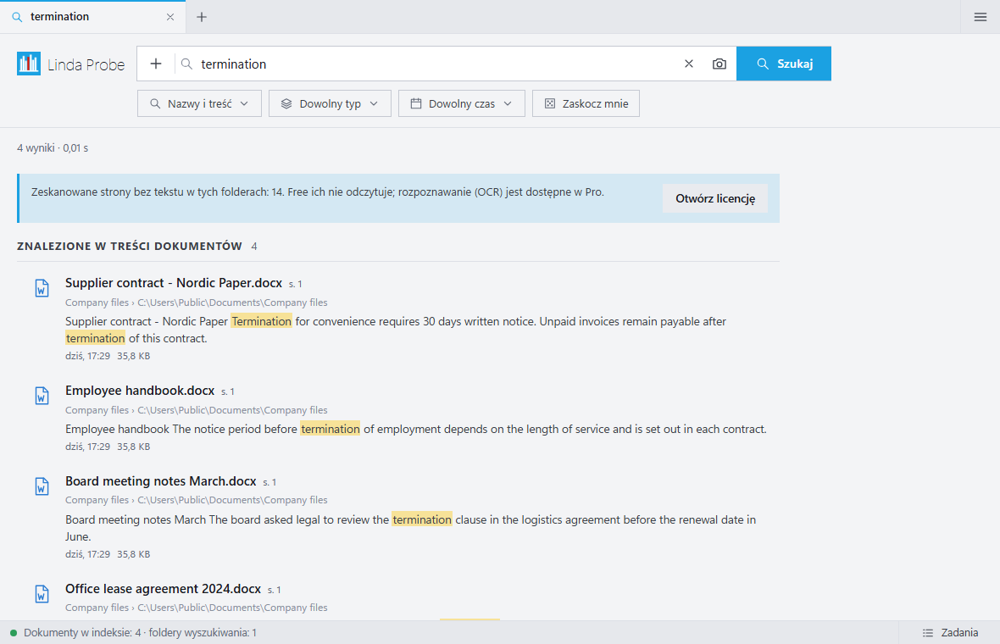
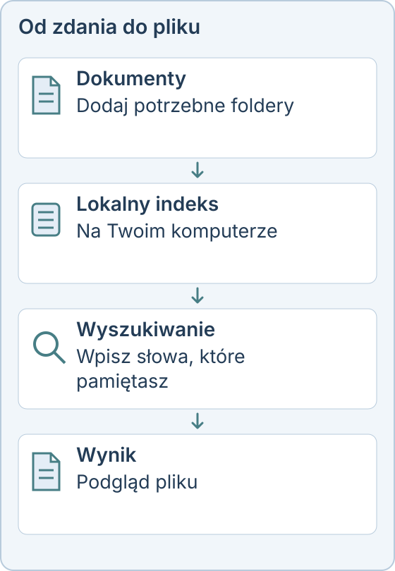

Wyszukiwanie w zawartości plików na Windows
Pamiętasz zdanie z dokumentu, ale nie wiesz, jak nazywa się plik ani gdzie się znajduje. Linda Probe przeszukuje nazwy plików i tekst w dokumentach na Twoim komputerze.
Co oferuje wersja bezpłatna
Free obejmuje wyszukiwanie nazw, dokładnych słów w treści, przeglądanie folderów, podgląd i ręczne tagi. Ta wersja nie ogranicza liczby plików ani szybkości. Do osobistego, niekomercyjnego użytku jest bezpłatna i bez limitu czasu.

Gdy nie pamiętasz słów
Probe Pro dodaje wyszukiwanie semantyczne, więc dokument można opisać własnymi słowami. Pro zawiera też OCR skanów, wyszukiwanie zdjęć po opisie lub wzorze oraz automatyczne tagi.
Jakie pliki
Dodaj potrzebne foldery i szukaj w nazwach, treści lub w obu naraz. Filtry i operatory zawężają wyniki według typu, rozmiaru, daty lub ścieżki, na przykład ext:pdf albo date:2025. Probe przeszukuje dokumenty biurowe, PDF, pliki poczty i zwykły tekst.
Pliki zostają na Twoim komputerze
Wyszukiwanie i indeksowanie działają lokalnie, a dokumenty nie są wysyłane do operatora. Internet jest potrzebny do pobierania, aktualizacji i weryfikacji licencji. Aplikacja nie zbiera telemetrii.

Probe Pro kosztuje 10 USD jednorazowo dla jednej osoby (do 3 urządzeń), 30 USD jednorazowo dla maksymalnie 10 osób lub 500 USD rocznie dla organizacji. Osobiste, niekomercyjne korzystanie z podstawowych funkcji jest bezpłatne. Podatki i kwota końcowa są widoczne przed zapłatą.
Linda Probe działa w systemach Windows 10 i 11 (x64). Dodatkowe modele są pobierane po aktywacji i wymagają internetu, miejsca na dysku oraz zgodnego sprzętu. Instalator nie ma jeszcze podpisu cyfrowego, więc Windows SmartScreen może wyświetlić ostrzeżenie.